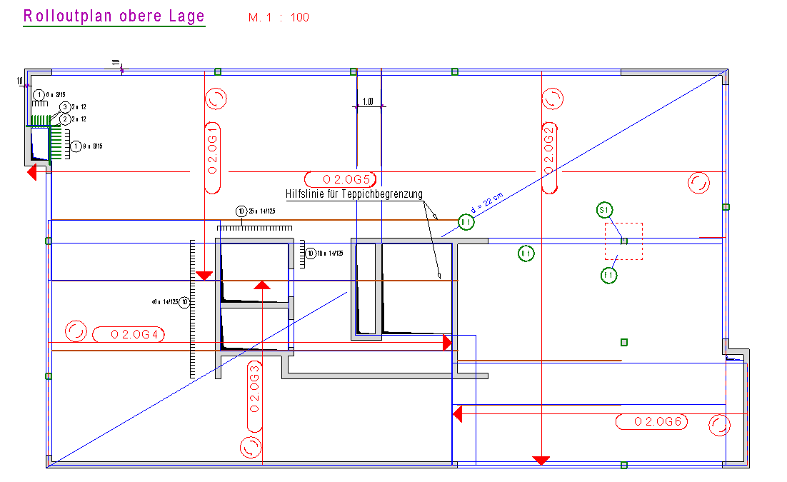
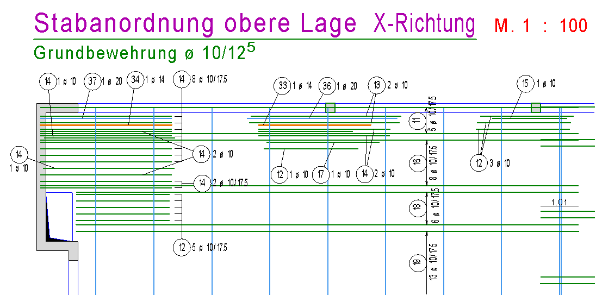
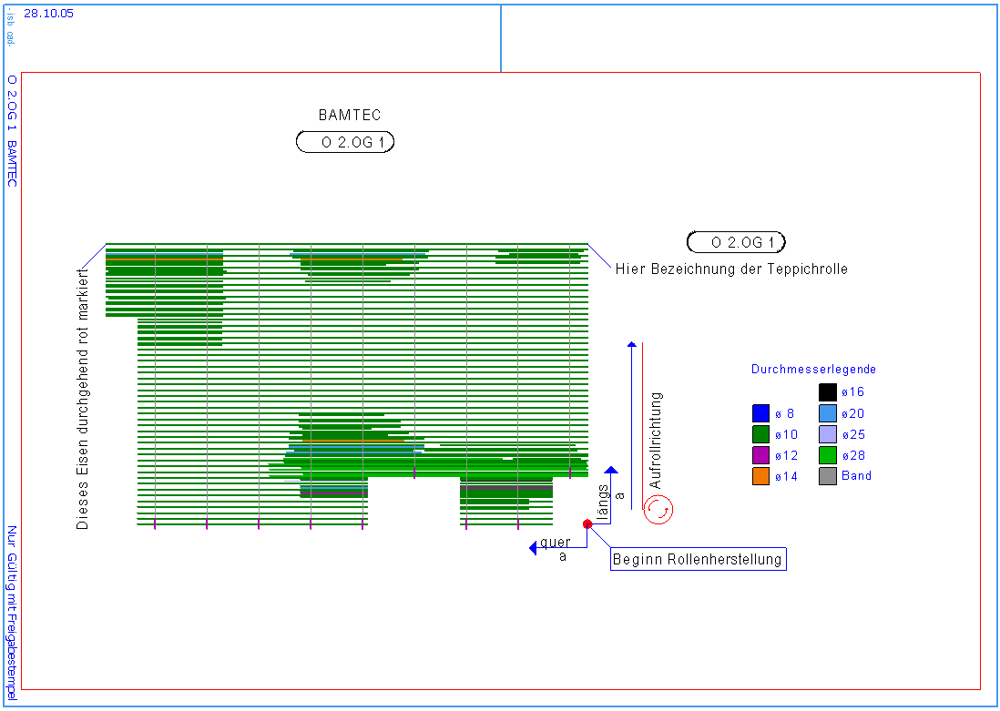

Bereiten Sie Ihren Grundriss soweit auf, dass er nur die wichtigsten geometrischen Elemente, wie Wände, Stützen, Durchbrüche usw. enthält.
1.Kopieren Sie den Grundriss entsprechend oft für die unterschiedlichen Lagen und für den Prüfer. Benötigt werden die folgenden Pläne:
·Rolloutplan für die Baustelle ·Herstellungsplan für das Werk ·Kontrollplan für den Prüfer |
2.Teilen Sie den Grundriss in Abschnitte für die Teppiche (Übergreifungsbereiche beachten!) auf. Verwenden Sie hierfür die Funktion [Konst1 | Linien | Parallele] oder [HiP].
3.Starten Sie das Programm [Option | BAMTEC] mit Übernahme aus FEM.
4.Rahmen Sie den Grundrissbereich der aS-Punkte ein.
5.Lesen Sie die aS-Werte aus der FEM-Datei ein.
Gilt für den gesamten Deckenbereich.
6.Legen Sie die Geometrie des Teppichs inklusive der Durchbrüche fest.
7.Je nach Bedarf fassen Sie Stäbe unterschiedlicher Länge zu Staffeln mit bündigen oder gleichen Längen und Durchmessern zusammen.
8.Verschieben Sie ggf. die Tragbänder.
9.Erzeugen Sie die Tec-Datei, in der alle Daten für die Herstellung enthalten sind.
10.Klicken Sie auf die Schaltfläche Fertig, um den Teppich komplett auf der Zeichnung darzustellen.
11.Wenn Sie mehrere Teppiche definieren möchten, wiederholen Sie die Schritte 6 - 10.
12.Kopieren Sie die Bewehrungen über die Zwischenablage in separate Pläne für das Herstellerwerk.
13.Verschieben Sie die Bewehrungen in den Kontrollplan für den Prüfer. Eventuell können Sie die Darstellung der Staffeln ändern, so dass nicht jeder Stab, sondern nur der erste und letzte dargestellt werden.
|
Tipps: |
|
·Die Teppicheinteilung lässt sich leichter festlegen, wenn Sie die automatische Bewehrung ausführen. Somit lassen sich Stöße im Bereich der Zulagen vermeiden. ·Wenn Sie zuerst nur die Teppichgeometrie festlegen möchten, ohne die Bewehrung zu bearbeiten, klicken Sie bei Erscheinen des Dialogs BAMTEC auf Fertig, um nur den Teppichumriss und die BAMTEC-Symbole zu erzeugen. |

Beispiele:
Verlegeplan mit Stabstahlzulagen. Die Hilfslinien müssen gelöscht werden.
 |
Ausschnitt aus der Darstellung für die X-Richtung der oberen Lage
 |
Herstellungsplan für das Werk. Hierzu gehört die entsprechende Tec-Datei.
 |
Siehe auch: